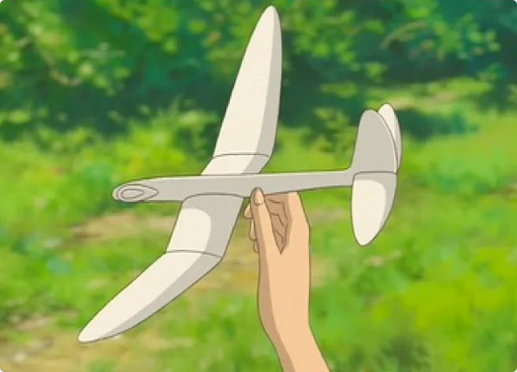
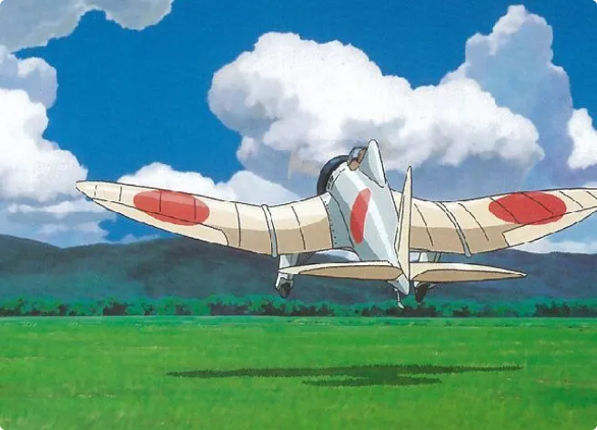

Filmography
See the other movie realised by Hayao Miyazaki.
read more
"The wind rises, we must try to live"
"The Wind Rises" is a 2013 animated production directed by Hayao Miyazaki. Its title comes from a famous poem by French poet and philosopher Paul Valery, "The wind rises, we must try to live".
The story pays tribute to an aeronautical engineer Jiro Horikoshi.
Jirô was born in 1903 and died in 1982. He was a major contributor to japan’s engineering of state of the art bombers. He designed the Mitsubishi A6M and A5M bombers, also called the Zero fighter and Claude in the movie.
The movie begins when Jirô is a child. He wants to become a fighter pilot, but due to him being average he will never be able to. He then decides to shift his focus on aeronautics all his life.
Several major events that took place during his lifetime are shown in the movie, such as the 1923 earthquake in Tokyo. There were also the water crisis, Tokyo’s reconstruction or the Shōwa economic collapse due to the failure of state banks.
Ahead of the earthquake, he met a young girl named Nahoko while he was traveling by train.
This scene is memorable because it is the first one where the title of the film and the end of the line from the poem "The wind is rising, we must try to live" is quoted.
This sentence gives hope and encourages people to pursue their dreams, especially Jirô's which is about aviation.
Throughout the movie, there are dreamlike passages where he meets the famous Count Caproni. An aeronautical engineer with whom he shares his dream, they exchange advice that will help Jirô to progress.
It’s love at first sight and a cohesion between Nahoko and Jirô soon arises during the trip. Jirô comes back to help the young girl move back home after the earthquake.
They meet again when Jirô travels to Germany to bring japanese aviation up to date with worldwide standards.
Unfortunately Nahoko, like her mother, has tuberculosis. They decide to get married quickly after learning about it.
At the end of the movie we notice that Nahoko remains in the background throughout Jirô's life. Although she is ill, he remains very focused on his work until he succeeds in designing his plane.
Unfortunately, his wife passes away during his prototype’s successful speed test. He sees her one last time in his dreams where they say their goodbyes to each other. At this moment she quotes the famous verse of Paul Valéry. Jirô has finally realized his dream and must start to live for it.
I personally like this movie a lot because it is a heartbreaking love story, with an interesting view on Aviation.
The love story is very emotional, but I find Jirô selfish to have let his wife live with him while she needed care.
Though she loves him a lot and asks him to live (by the verse of the poem). Now that he has achieved his dream he won't be able to enjoy a family life as his wife is no longer alive. There is a big suspense about the end of the film and what Jirô will do after the war.
See the other movie realised by Hayao Miyazaki.
read more

You want to see more about Miyazaki’s universe ? His movies are easier to understand than you think.
read more